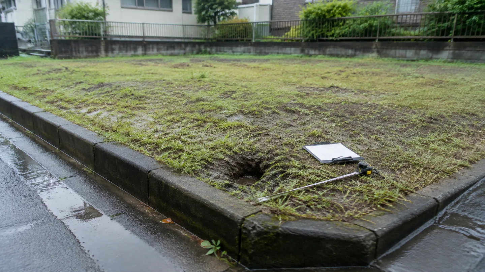
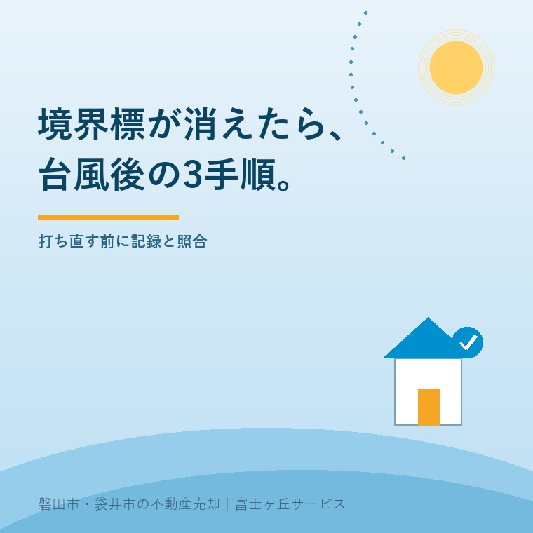

2026年9月3日｜カテゴリ：相続土地／境界標／台風


この記事の要点
Q. 台風後、相続した土地の境界杭が消えました。査定の前に何をしますか。
A. 杭を自分で打ち直さず、①現況を写真と寸法で保存、②地積測量図や過去の立会書類と照合、③土地家屋調査士へ復元方法を相談します。標識が消えても筆界まで動いたとは限りません。売買条件を決める前に、資料と現地を分けて確かめます。
磐田市・袋井市・森町では、境界と売却条件を一緒に整理できる地域密着の不動産会社へ相談する選択肢があります。
台風の翌日に相続土地を見に行き、「前にあったはずのコンクリート杭がない」と気づくことがあります。倒木や土の流出で見えなくなったのか、工事で抜かれたのか、最初から別の印を見ていたのか。現場だけでは判断できません。
気象庁の平年値では、9月に台風が東海地方へ接近する数は1.2個です。1991年から2020年までの30年平均で、台風の中心が東海地方のいずれかの気象官署から300キロ以内に入った場合を数えます。上陸数ではありません。
相続土地の境界標が見つからないときの第1手順は、穴を埋めたり杭を打ったりせず、土地の角と周辺を写真、動画、簡単な寸法で保存することです。
境界標は勝手に打ち直しません。巻き尺で隣の杭から同じ距離を測っても、元の点を再現した証明にはなりません。位置を誤れば、隣地との話を難しくします。
引渡し前に台風で建物や塀が壊れた場合は、境界とは別に契約上の負担も確認します。引渡し前の台風と危険負担に、契約書へ置く確認項目をまとめています。
相続土地の境界標を探す第2手順は、法務局の地図、地積測量図、過去の測量成果、隣接地との立会書類を集め、現況写真と照合することです。
| 資料 | 分かること | 注意すること |
|---|---|---|
| 登記事項証明書 | 地番、地目、地積、名義 | 現地の杭位置そのものは載らない |
| 法務局の地図・図面 | 土地の並びと地番 | 精度や作成時期を確認する |
| 地積測量図 | 辺長、座標、境界標の種類等 | 備付けがない土地もある |
| 過去の立会書類 | 誰がどの点を確認したか | 署名者と対象範囲を見る |
| 相続前の写真 | 塀や杭の見え方 | 撮影位置と日付を確認する |
日本土地家屋調査士会連合会の相談Q&Aは、境界確認の資料として公図、地積測量図、換地図などを挙げています。図面を無料で調べる入口は、公図を無料で見る方法でも案内しています。
公図に線があるから、現地の一点が自動で確定するわけではありません。同連合会は、土地家屋調査士が地図や地積測量図、現地、隣接所有者の立会い等から筆界を確認し、測量すると説明しています。
相続土地の境界標を戻す第3手順は、集めた資料と現況写真を土地家屋調査士へ渡し、既知点から復元できるか、隣接地の立会いが要るかを確認することです。
同連合会は、資料調査、現地測量、仮の境界点の復元、関係所有者との立会い、境界標設置という作業順を示しています。相続人や不動産会社が新しい位置を決める仕事ではありません。
境界には「筆界」と「所有権界」があります。筆界は登記された土地を区画する線、所有権界は所有権が及ぶ範囲を示す線で、両者が一致しない場合もあります。
隣地と見解が分かれ、資料を集めても筆界が明らかにならない場合は、法務局の筆界特定制度という道もあります。いきなり申請すると決めず、土地家屋調査士へ資料の強さと費用、期間を聞きます。
境界立会いは、帰省日に合わせれば終わる作業とも限りません。隣接所有者の予定を合わせる事情は、お盆の三日間でしかできない境界立会いに書いています。
3手順の良い点は、境界標がない事実を隠さず、どこまで調査してから売るかを査定段階で比べられることです。買主へ示す資料と、売主が負担する作業を契約前に分けられます。
その上で、仲介会社へ注文したい点があります。「杭がないから確定測量が必須」と即断するのも、「現況のままで問題ない」と片づけるのも早い。契約で境界を明示する範囲、公簿面積と実測面積の扱い、買主の利用目的を見て決めます。
売買代金を登記面積で決める公簿売買と、測った面積で決める実測売買の違いは、公簿売買と実測売買の違いで費用負担まで整理しています。境界標の有無と売買面積の決め方は、関係しますが同じ問題ではありません。
私はこう考えます。査定額を先に出す前に、道路と境界と名義を見る。台風後なら、その順番に「現況写真」を一つ足します。確定測量を頼むかは後で決められる。消えた可能性がある現場だけは、先に残しておけません。
ここは私も迷います。早く価格を出せば、ご家族は安心します。一方、境界の作業範囲を伏せた査定額は、後で測量費と引渡し延期に変わります。これは体験ストックにある特定案件ではなく、宅地建物取引士としての私の意見です。
相続土地の査定を頼むときは、境界標の本数を断定せず、「以前見た北西角の標識が2026年9月3日時点で見当たらない」と場所と確認日を書いて伝えます。
今日できる確認は、土地の四隅を撮り、見つかる境界標と見つからない地点を一枚の紙に丸で示すことです。雨が続く前なら、側溝の土や倒れた植木を片づける前に撮影します。
境界標が見つからないだけで直ちに売却不能とはなりません。ただし、契約で売主が境界を明示するのか、公簿面積と実測面積のどちらで精算するのかにより、測量の要否、費用、引渡し時期が変わります。査定時に「見つからない」と伝え、現況売買、公簿売買、確定測量後の売買を同じ表で比べてください。
写真で現況を残したうえで、「境界標が見当たらないので確認したい」と事実だけを伝えるのは一案です。ただし、位置を決めつけたり、口頭だけで新しい杭の場所に合意したりしないでください。過去の地積測量図や立会書類を土地家屋調査士が確認し、必要な立会いの相手と順番を整理してから進めます。
法律上いつも売主負担、買主負担と一律に決まる話ではなく、売買契約の条件と作業範囲で決めます。査定額だけでなく、資料調査、現況測量、隣接地立会い、境界標設置、登記申請が見積りに含まれるかを分けて確認してください。境界・登記の個別判断と費用は土地家屋調査士へ確認をお願いします。

この記事を書いた人：大石浩之（宅地建物取引士）
大石浩之（磐田市／不動産業）。磐田市・袋井市・森町で、相続土地の境界、道路、名義を査定前に整理しています。杭が見当たらない事実も、売買条件へ落として案内します。プロフィール
磐田市・袋井市・森町の相続土地相談
境界標がない事実を、査定条件へ落とす
現況、公簿、測量後の売り方を、費用と期間で並べます。土地家屋調査士へ渡す資料も先に整理できます。
本記事は2026年9月3日時点の公表資料に基づく一般的な説明です。気象庁の1.2個は1991～2020年の平年値で、2026年9月の予報ではありません。境界標の復元、測量、筆界、登記は土地家屋調査士や法務局へ、契約条件は宅地建物取引士や弁護士へ、税務・登記・相続の個別判断は各専門家に確認をお願いします。
富士ヶ丘サービス株式会社／静岡県磐田市見付5789番地1／TEL:0538-31-3308／静岡県知事 (2) 第14083号／代表取締役・宅地建物取引士 大石 浩之